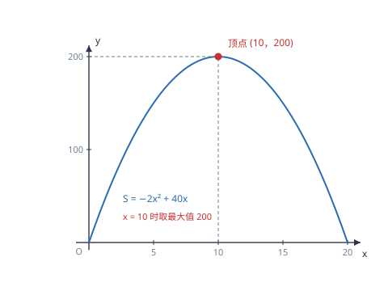

二次函数的综合应用（最值·面积·动点）
利润最大、面积最大、距离最短，本质上都是同一个动作：把目标量写成二次函数，再求顶点。
| 所属主题 | 函数 |
|---|---|
| 所属模块 | 代数 |
| 课标学段 | 第四学段（7~9 年级） |
| 前置知识 | 二次函数的图象与性质、二次函数与一元二次方程 |
| 核心素养 | 模型观念应用意识运算能力 |
教材定位
人民教育出版社《人教版（2024版）义务教育教科书·数学》
九年级上册第26章 二次函数26.4 实际问题与二次函数
对应九上 26.4：利润最大化、面积最大化等最值模型。
说明
二次函数的最值由顶点给出：a>0 时顶点是最低点、函数有最小值；a<0 时顶点是最高点、函数有最大值。最值为 \dfrac4ac-b^24a，在 x=-b/2a 处取得。应用题的难点不在求顶点，而在两件事：把文字描述翻译成二次函数，以及确定自变量的实际取值范围。
三类问题最常见。利润最大：设涨价（或降价）为 x，则单件利润是「原利润 ± x」，销量是「原销量 \mp 每元变化量 × x」，两者相乘得到关于 x 的二次函数。面积最大：设一边为 x，用周长或篱笆总长表示另一边，相乘得二次函数。动点面积：设运动时间为 t，用含 t 的式子表示底与高，再算面积。三类问题的式子不同，但解法完全一致：建模、配方、验证范围、作答。
使用场景
当题目问「售价定为多少时利润最大」「怎样围面积最大」「几秒后三角形面积最大」时，都是二次函数最值题。判断信号是：题目里有一个可以自由调节的量（售价、边长、时间），而目标量随它变化，且变化规律含「平方」——通常来自「长乘宽」或「单价乘数量」这类两个变化的量相乘。
当题目给出的是一个几何图形加一个动点，并问面积或长度的最值时，先画图、标出各段的长度（用含 t 的式子），再找面积公式。动点题的关键是写出自变量的范围：点只能在边上运动，时间不能超过走完这条边所需的时间，这个范围常常决定顶点是否可取。
注意点
自变量的取值范围必须写出来，并且用它检验顶点。若顶点横坐标落在范围内，最值就在顶点处；若落在范围外，函数在该区间上单调，最值在端点处取得。漏掉这一步是这类题最常见的失分点。
利润问题中「涨价」与「销量减少」的对应关系容易写反。设涨价 x 元，则售价是「原价 +x」、单件利润是「原利润 +x」、销量是「原销量 - 每元减少量 × x」。三个式子中前两个是同向、第三个是反向，写完后可以用 x=0 代入检验：应还原为原来的利润与销量。
证明

图 1：面积随宽变化是一条开口向下的抛物线，顶点就是最大面积，但要先确认顶点落在自变量范围内
证明
结论 1二次函数 y=a(x-h)^2+k 在 x=h 处取最值：a>0 时最小值是 k，a<0 时最大值是 k。
顶点为什么一定是最值：把二次函数配方成 y=a(x-h)^2+k，由于 (x-h)^2≥ 0 恒成立：当 a>0 时 a(x-h)^2≥ 0，所以 y≥ k，最小值是 k；当 a<0 时 a(x-h)^2≤ 0，所以 y≤ k，最大值是 k。等号在 x=h 时成立。顶点的最值地位由「平方非负」这一条推出，不依赖图象。
关键一步依据是平方非负（(x-h)^2≥ 0，等号当且仅当 x=h）：a>0 时加上一个非负数只会抬高函数值，a<0 时只会压低，所以 k 就是对应的最小值或最大值。
结论 2应用题里「两个此消彼长的量相乘」（利润 = 单件利润 × 销量、面积 = 长 × 宽）就产生二次函数。
建模为什么总能得到二次函数：利润 = 单件利润 × 销量，其中单件利润随调价线性变化、销量也随调价线性变化，两个一次式相乘，结果就是二次式（二次项来自两个一次项相乘）。面积 = 长 × 宽，而长与宽受同一个总量约束（如篱笆总长固定），一个增另一个必减，也是两个一次式相乘。所以「两个此消彼长的量相乘」是二次函数应用题的统一来源。
关键一步依据是「两个一次式相乘必得二次式」：两个一次项相乘产生二次项 acx^2。而一次式的来源是「总量固定时此消彼长」——总量固定时一个量与另一个量之和为常数，各自都是一次的，乘起来自然是二次的。
结论 3实际问题中顶点可能落在自变量的有效区间之外，这时最值只能出现在区间端点。
为什么必须检查范围。配方得到的顶点是「整条抛物线」上的最高点，但实际问题只允许 x 取一段区间（宽不能为负、销量不能为负、时间不能超过走完全程）。若顶点在区间外，真正的最大值只能出现在区间端点——此时抛物线在该区间上单调，越靠近顶点越大的规律仍然成立，只是顶点取不到。
关键一步依据是「最值只能在自变量的取值范围内取到」：顶点式给出的是整条曲线上的极值点，而实际问题中 x 只能取一段区间；区间不含顶点时抛物线在该区间上单调，最值必在端点，所以先定范围再谈最值。
结论 4自变量的有效区间由每条实际限制各给出一个不等式，再取它们的交集得到。
范围是怎么定出来的：宽 x>0；长 40-2x>0 给出 x<20；销量 200-5x≥ 0 给出 x≤ 40；动点时间不超过走完边长所需的时间。每一条限制都是一个不等式，取它们的交集就是自变量的有效区间。这一步与前一篇不等式组取交集的做法完全一致。
关键一步依据是「每个实际限制都是一个不等式、同时满足才成立」：宽、长、销量、时间各自给出范围，全部条件的公共部分就是有效区间，所以要取交集而不是任选一条。
动手实验
用一根 40 厘米长的绳子（当作篱笆）靠墙围矩形，墙那一侧不占绳子。依次取宽 x=4,6,8,10,12,14,16 厘米，算出长 40-2x 与面积 S=x(40-2x)，记录：128、168、192、200、192、168、128。可以看到面积先增后减，在 x=10 处最大，为 200 平方厘米，且 x 与 20-x 两组数据对称——这正说明 x=10 是抛物线的顶点。
解题思路
二次函数应用题走五步：设自变量（写清单位与含义）；用含自变量的式子表示其他相关量；写出目标函数并化简成 y=ax^2+bx+c；配方或用公式求顶点，同时写出自变量的取值范围；判断顶点是否在范围内，得到最值并作答。五步中第三步之后不要急着算顶点，先把范围写出来，否则容易得出取不到的最值。
利润问题的建模有固定套路：设涨价（降价）x 元，单件利润 = 原利润 ± x，销量 = 原销量 \mp 每元变化量 × x，利润 = 单件利润 × 销量。写成式子后先代入 x=0 检验是否等于原来的利润总额，这一步能立刻发现正负号写反的错误。
面积与动点问题的建模，先把图形画出来、把每段长度标在图上。矩形面积直接长乘宽；三角形面积用 1/2× 底 × 高，其中底与高都要用 t 表示；若图形不规则，用「矩形面积减去几个三角形」的办法，仍然得到二次函数。最后按「点在哪条边上、走了多久」写出 t 的范围。
按场景的例题
例 1（场景：销售与利润） 涨价与销量下降之间的利润最值
某商品进价 40 元，售价 60 元时每月可卖 200 件。市场调查表明：售价每上涨 1 元，月销量减少 5 件。售价定为多少元时月利润最大？最大利润是多少？
解：设售价上涨 x 元（x≥ 0），则售价为 (60+x) 元，单件利润为 (20+x) 元，销量为 (200-5x) 件。月利润 W=(20+x)(200-5x)=4000-100x+200x-5x^2=-5x^2+100x+4000。配方：W=-5(x^2-20x)+4000=-5≤ft[(x-10)^2-100]+4000=-5(x-10)^2+4500。因为 a=-5<0，x=10 时取最大值 4500。检验范围：销量 200-5× 10=150>0，符合实际。核对：售价 70 元、单件利润 30 元、卖 150 件，30× 150=4500 元。
答：售价定为 70 元时月利润最大，最大利润 4500 元。
例 2（场景：测量与工程） 靠墙围矩形场地的面积最值
用长 40 米的篱笆靠墙围一个矩形场地，墙那一侧不需要篱笆。矩形的宽为多少时面积最大？最大面积是多少？
解：设宽为 x 米，则篱笆用去两个宽加一个长，长为 (40-2x) 米。面积 S=x(40-2x)=-2x^2+40x。配方：S=-2(x^2-20x)=-2≤ft[(x-10)^2-100]=-2(x-10)^2+200，所以 x=10 时 S 最大为 200。范围：宽 x>0，长 40-2x>0 即 x<20，所以 0<x<20，x=10 在其中。核对：宽 10 米、长 20 米，篱笆共 10+10+20=40 米，面积 200 平方米。
答：宽 10 米、长 20 米时面积最大，最大面积 200 平方米。
例 3（场景：图形设计） 矩形边上两个动点构成的三角形面积
矩形 ABCD 中 AB=8 厘米、BC=6 厘米。点 P 从 A 沿 AB 向 B 以每秒 1 厘米移动，同时点 Q 从 B 沿 BC 向 C 以每秒 1 厘米移动。设运动时间为 t 秒，求 \triangle PBQ 的面积 S 与 t 的关系式，并求 S 的最大值。
解：经过 t 秒，AP=t，所以 PB=8-t；BQ=t。因为 AB\perp BC，\triangle PBQ 是直角三角形，S=1/2\cdot PB\cdot BQ=1/2(8-t)t=-1/2t^2+4t。配方：S=-1/2(t^2-8t)=-1/2≤ft[(t-4)^2-16]=-1/2(t-4)^2+8。因为 -1/2<0，t=4 时 S 取最大值 8。范围：点 P 走完 AB 需 8 秒、点 Q 走完 BC 需 6 秒，两者同时运动，取较短的 0≤ t≤ 6，t=4 在范围内。核对：t=4 时 PB=4、BQ=4，面积 1/2× 4× 4=8 平方厘米。
答：S=-1/2t^2+4t（0≤ t≤ 6），t=4 秒时面积最大为 8 平方厘米。
常用推论
在周长固定的矩形中，正方形的面积最大。这条结论可以直接由二次函数最值推出：设周长为 L，一边为 x，则面积 S=x≤ft(L/2-x)，顶点在 x=L/4，此时两边相等。同类结论还有「和固定的两个正数，相等时乘积最大」。
利润问题中，最大利润对应的涨价额 x=-b/2a 可以用公式直接算，不必先配方。设单件利润为 (p_0-c+x)、销量为 (q_0-kx)，则 W=-kx^2+≤ft[k(p_0-c)-q_0]x+\ldots，顶点在 x=\dfracq_0-k(p_0-c)2k。把题目的数代进去即可，但这个结果不必记，配方更稳妥。
动点问题中，若两点同时出发且速度相同，常出现「两边之和为定值」的情形（如 PB+BQ=8），此时面积的最大值出现在两边相等处，与「周长固定时正方形面积最大」是同一结论。识别出这个结构，可以不算顶点直接判断。
易错点
错求出顶点 x=10、最大值 4500 后直接作答，没有检查销量 200-5x 是否为正。
为什么错顶点虽然在数学上是最值点，但若 x 取 10 时销量已为负，这个方案在实际中不存在。本例销量 150 为正、恰好没问题，但换成「每涨 1 元少卖 30 件」时，x=10 就已售不出货。
正确先写出约束（销量 ≥ 0、售价 >0、长度 >0），得到 x 的范围，再确认顶点落在范围内。这一步写在答题卡上，是独立的分点。
错利润题中设涨价 x 元，写成销量 (200+5x) 件。
为什么错涨价会让销量减少，符号写反了。写成加号，算出的是「越涨价越畅销」，与实际相反，顶点位置也会完全错误。
正确涨价 x 元对应销量 (200-5x) 件。用 x=0 检验：代入应还原为原销量 200 件，这是一个可靠的自检动作。
错动点题中把 t 的范围写成 0≤ t≤ 8（按较长的边取）。
为什么错点 Q 走完 BC=6 厘米只需 6 秒，t>6 时 Q 已经不在边上了，此时「\triangle PBQ 在矩形内」的前提不成立。范围要取两条边中较短的那个时间。
正确取 0≤ t≤ 6。写出范围时逐个检查每个动点能走多久，取交集，再判断顶点是否在交集内。
直观理解
这类题像调音量：调大一点，单价高了但买的人少了；调小一点，买的人多了但每件赚得少。总利润是「单价收益」与「销量」的乘积，一头涨一头落，所以中间必定有一个最合适的点——图象上就是抛物线的顶点。而篱笆围地也一样：一边太长另一边就太短，面积也是一头涨一头落。凡是「两个此消彼长的量相乘」，都藏着一条抛物线，顶点就是那个刚刚好的位置。